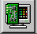

Customizing with the KDE Control Center
You can start the KDE Control Center from either the Main Menu K icon (Settings => Desktop) or from the Panel, by clicking on the KDE Control Center icon, which looks like: 
Changing the Background
The Background category of the KDE Control Center will look like Figure 8-3.
The KDE Control Center is divided into two main panels: On the left, you'll find categories, and on the right, in the main panel, the corresponding elements you can modify for a category. The categories may be collapsed when you first open the control center. Click on the + to expand the categories.
In the Background category, you can change the background colors from a single color to a two-color gradient, and select whether the gradient is horizontal or vertical on your desktop.
 | Automatic preview |
|---|---|
Whenever you make a selection for your background, you'll automatically see a preview of the effect in the dialog. |
A unique feature of the Background category in the KDE Control Center is the option to create distinct backgrounds for each desktop. When the Common Background option is unchecked in the Desktop panel, the labels for each of your desktops will be highlighted. Click on a label to customize the corresponding desktop. (Checking the Common Background label will apply your background selections to all your desktops. Note that you can add both colors and/or wallpaper to each of your desktops, as long as the Common Background option is unchecked.
Click on the drop-down list in the Wallpaper section to choose a pre-selected pattern or photo for your desktop. In the drop-down list next to Arrangement, you can select how you want the image to appear: centered, tiled, in which the pattern is repeated across your desktop, and other views.
If you want something closer to a total make-over, try changing the theme of your workspace.
Changing the Theme
Applying a new theme to your workspace can change the look and feel of your Panel, buttons, menus, and even the background.
To begin, select the Theme Manager category (see Figure 8-4). By default, you have several themes, however there are quite a few more themes available at kde.themes.org, http://kde.themes.org.
If you want to install a theme you have downloaded, click on the Add button. In the dialog which opens, locate the name of the theme file you have downloaded then either double-click on it or click on it to highlight the file, and click the OK button. Your theme will be installed as one of the optional themes you can try.